YOGA
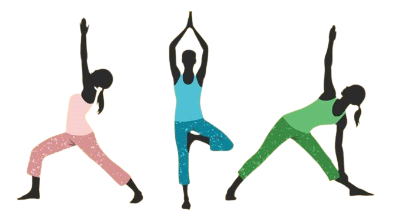
"Yoga is essentially a spiritual discipline based on an extremely subtle science, which focuses on bringing harmony between mind and body"
Pranayam :
1. Anulom-vilom Pranayama
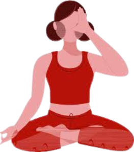
This pranayama helps normalize blood pressure, aids in blood purification, reduced the risk of heart disease, and can also improve sight.
- Choose a meditation sitting pose. Keep your spine and neck straight and close your eyes.
- Clear your mind of everything outside of this moment.
- Start with your outer wrists resting on your knees.
- Using your right hand, fold your middle and index fingers toward your palm.
- Place your thumb on your right nostril and your ring finger on your left nostril.
- Close your right nostril with your thumb and inhale through your left nostril, slowly and deeply, until your lungs are full. Focus on your breathing.
- Next, release your thumb and close your left nostril with your ring finger.
- Exhale slowly through the right nostril.
- Now practice it in reverse, this time inhaling through the right nostril and exhaling through the left.
2. Bhramari Pranayama
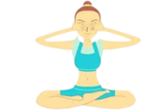
This pranayama derives its name from the Bhramari, the black Indian bee. The exhalation resembles the typical humming sound of a bee!
- Sit on the Padmasana or any other sitting Asana.·
- Close your eyes and breathe deeply.·
- Now close your ears lids or flaps with your thumbs.
- Place your index finger just above your eyebrows and the rest of your Fingers over your eyes with your middle fingers.·
- Applying very gentle pressure to the sides of your nose.
- Now concentrate your mind on the area between your eyebrows.·
- Keep your mouth closed; breath out slowly through your nose with making a humming sound of Om.·
- Repeat this process 5 times. The important thing is that while doing this Pranayama assumes that you are being connected to all the positive energies of the universe.
3. Ujjayi Pranayama
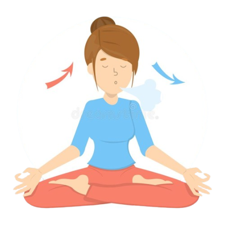
Also known as victorious breath or ocean breath, this breathing technique involves a soft hissing sound during inhalation.
- Close the mouth and constrict the throat (the glottis — a part of larynx).
- Make a short exhalation and then start inhaling—slowly and rhythmically in one long and unbroken inspiration.
- Allow the air to pass through the constricted throat, creating a “friction sound”.
- Continue inhaling till a sense of fullness is felt in the chest.
- Retain the inhaled air for a period of 6 seconds (preferably double the period of inspiration).
- ensure: While sitting spine, head and neck is maintained erect.
- Facial muscles are relaxed and nose is not constricted. Inhalation is slow and rhythmic – long, unbroken and without jerks.
- Now exhale as naturally as possible – gradually, avoiding jerky or hasty movements.
- Take few normal breaths and relax.
4. Kapalbhathi Pranayama
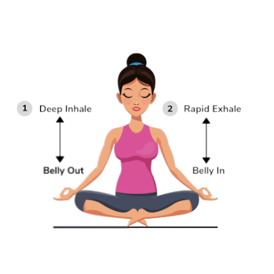
Known as the skull shining breathing technique, this strong deep breathing exercise is synonymous with Baba Ramdev for most of us!
- Sit comfortably with your spine erect. Place your hands on the knees with palms open to the sky.
- Take a deep breath in.
- As you exhale, pull your navel back towards the spine. Do as much as you comfortably can. You may keep your right hand on the stomach to feel the abdominal muscles contract./li>
- As you relax the navel and abdomen, the breath flows into your lungs automatically.
- Take 20 such breaths to complete one round of Kapal Bhati.
- After completing the round, relax with your eyes closed and observe the sensations in your body.
- Do two more rounds of Kapal Bhati.
5. Bhastrika Pranayama
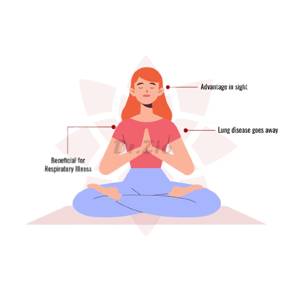
The forceful breathing exercise clears up your respiratory system and is characterised by sounds like a flame burning below a furnace.
- Sit in vajrasana or sukhasana (cross-legged position).
- (Pranayama can be more effective in vajrasana as your spine is erect and the diaphragmatic movement is better.)
- Makes a fist and fold your arms, placing them near your shoulders.
- Inhale deeply, raise your hands straight up and open your fists.
- Exhale slightly forcefully, bring your arms down next to your shoulders and close your fists.
- Continue for 20 breaths.
- Relax with palms on your thighs.
- Take a few normal breaths.
- Continue for two more rounds.
Surya Namaskar :
Step 1. Pranamasana (Prayer pose)
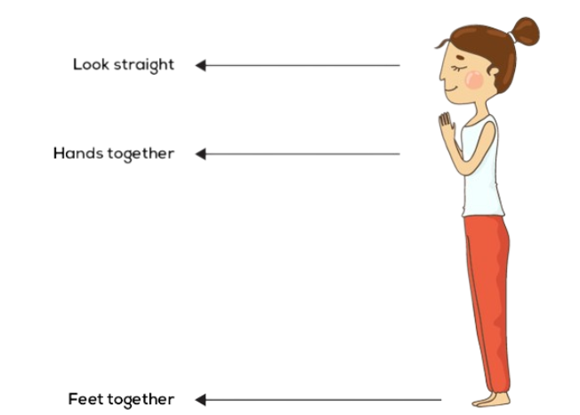
Stand at the edge of your mat, keep your feet together and balance your weight equally on both feet. Expand your chest and relax your shoulders. As you breathe in, lift both arms up from the sides, and as you exhale, bring your palms together in front of the chest in a prayer position.
Step 2. Hastauttanasana (Raised arms pose)
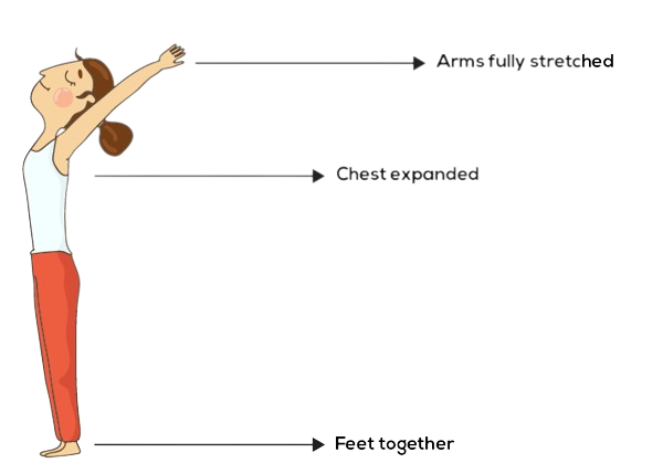
Breathing in, lift the arms up and back, keeping the biceps close to the ears. In this pose, the effort is to stretch the whole body up from the heels to the tips of the fingers.
Step 3. Hastapadasana (Standing forward bend)
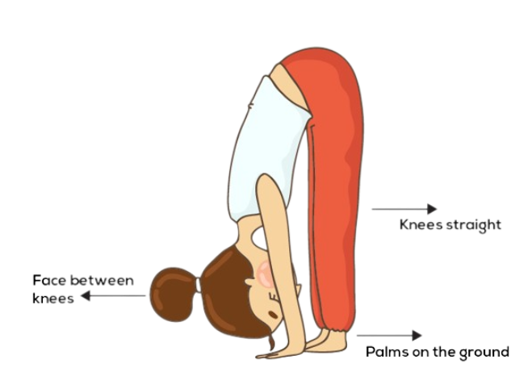
Breathing out, bend forward from the waist keeping the spine erect. As you exhale completely, bring the hands down to the floor beside the feet.
Step 4. Ashwa Sanchalanasana (Equestrian pose)
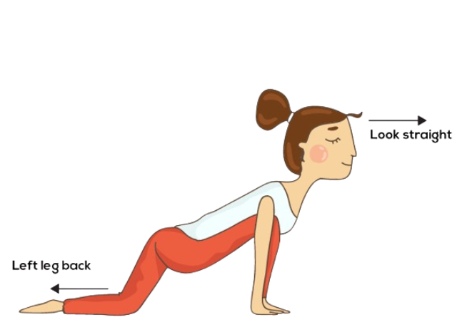
Breathing in, push your right leg back, as far back as possible. Bring the right knee to the floor and look up.
Step 5. Dandasana (Stick pose)
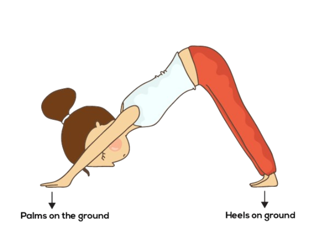
As you breathe in, take the left leg back and bring the whole body in a straight line.
Step 6. Ashtanga Namaskara (Salute with eight parts or points)
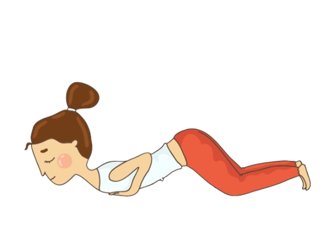
ently bring your knees down to the floor and exhale. Take the hips back slightly, slide forward, rest your chest and chin on the floor. Raise your posterior a little bit. The two hands, two feet, two knees, chest and chin (eight parts of the body) should touch the floor.
Step 7. Bhujangasana (Cobra pose)
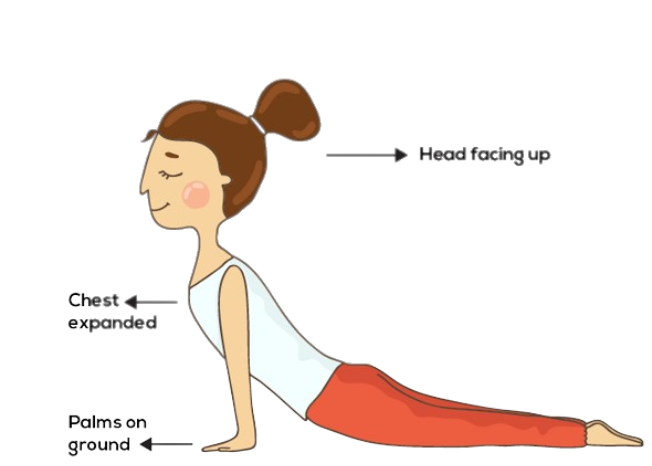
Slide forward and raise the chest up into the Cobra pose. You may keep your elbows bent in this pose with the shoulders away from the ears. Look up at the ceiling.
Step 8. Adho Mukha Svanasana (Downward facing dog pose)
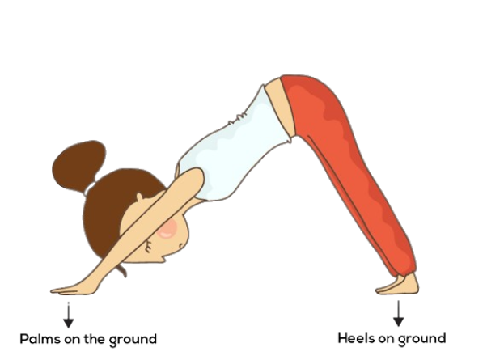
Breathing out, lift the hips and the tailbone up to bring the body into an inverted 'V' pose.
Step 9. Ashwa Sanchalanasana (Equestrian pose)
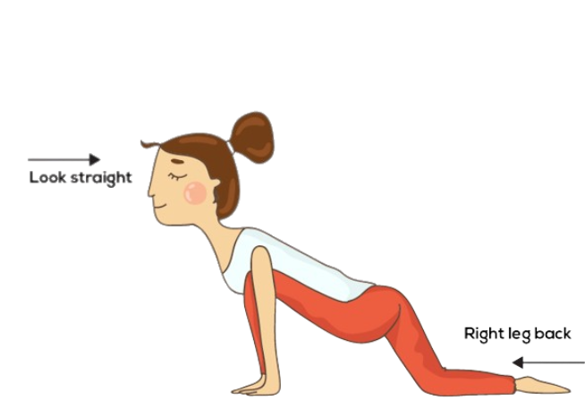
Breathing in, bring the right foot forward in between the two hands. The left knee goes down on the floor. Press the hips down and look up.
Step 10. Hastapadasana (Standing forward bend)
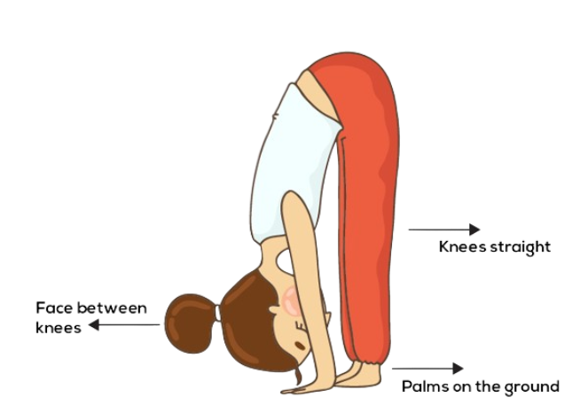
Breathing out, bring the left foot forward. Keep the palms on the floor. You may bend the knees, if necessary.
Step 11. Hastauttanasana (Raised arms pose)
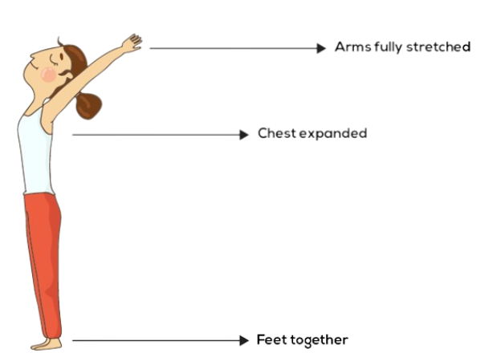
Breathing in, roll the spine up. Raise the hands up and bend backward a little bit, pushing the hips slightly outward.
Step 12. Tadasana (Mountain Pose)
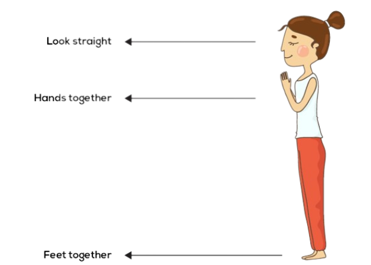
Stand at the edge of your mat, keep your feet together and balance your weight equally on both feet. Expand your chest and relax your shoulders. As you breathe in, lift both arms up from the sides, and as you exhale, bring your palms together in front of the chest in a prayer position.
Thank you for visiting
click here to check my github profile.